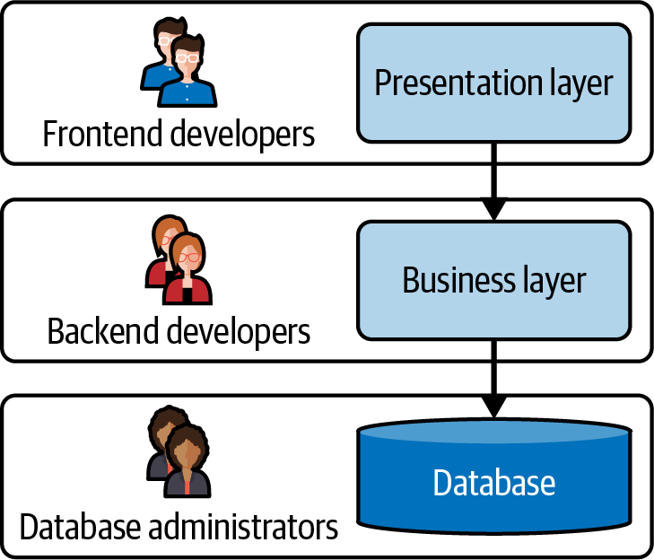
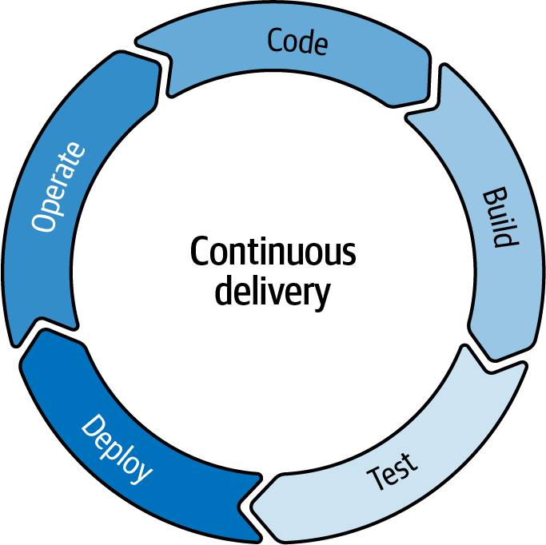

If you are new to microservices, this chapter will give you a solid grounding on what they are, where they shine, and where they present challenges. I’ll also cover the ecosystem that tends to go along with microservices—the technologies that enable this architecture.
Let’s start by defining what microservices are.
Microservices are independently releasable services that are modeled around a business domain.1
Modeling microservices around a business domain gives a closer alignment between business and IT, and means that most changes are within a microservice, so your team has complete control over making that change. In other words, costly coordination can be avoided.
Having independently releasable services means that as soon as a change is ready, you can release it. Typically, this happens multiple times a day.
The separation between these services gives teams more options: they can be more flexible in terms of the technology used, they can build services with different levels of robustness, and they can scale them independently. This flexibility also makes change easier, allowing engineers to solve problems as they hit them.
All of these aspects mean microservices give teams the capability to move fast.
Let’s go further than a definition of what microservices are, and look at a definition of the microservices architectural style. A microservice architecture is made up of lots of microservices, communicating over the network, meaning this is a distributed architecture.
Here’s what James Lewis and Martin Fowler wrote in their 2014 article that set out to define the then-new way of architecting software systems:
The microservice architectural style is an approach to developing a single application as a suite of small services, each running in its own process and communicating with lightweight mechanisms…. These services are built around business capabilities and independently deployable by fully automated deployment machinery. There is a bare minimum of centralized management of these services, which may be written in different programming languages and use different data storage technologies.
Let’s extract the key elements of that definition:
A suite of services
Each running in its own process
Communicating with lightweight mechanisms
Built around business capabilities
Independently deployable
Small
With a bare minimum of centralized management
Heterogeneous (may be written in different programming languages or use different data storage technologies)
Let’s now dig a bit deeper into each of them in turn.
For a microservice architecture, rather than deploying all the code for your system as a single monolithic executable, you split your code across multiple services that can be deployed independently. This allows you to release code for just one service, as soon as it’s ready, and gives you flexibility in how you build each service.
A microservice architecture is a distributed architecture. Each microservice runs in its own process, which means that what would be a method or function call within a single process in a monolith now goes over the network. This provides a clear boundary, making it hard to accidentally couple parts of the system together. However, calls over the network are much more likely to fail than those that are in-process. You can’t assume that the service you are calling will always be accessible and ready to serve your requests as quickly as you might like.
A principle of the microservices architectural style is to keep the communication between services as simple as possible, in contrast to earlier service-oriented architectures (described later in this chapter) where much of the complexity lived in the messaging layer.
Keeping communication simple means your services should either make direct calls to other services, for example over HTTPS, or pass messages using a lightweight message bus. The advantages here are that you don’t need a deep understanding of a complicated specification for message format,2 and you keep the business logic in one place—the service—rather than having some of that logic in a shared messaging layer where changing the logic will require coordination between teams, meaning it will take longer to make those changes.
Languages generally have the ability to make HTTPS calls built in (you can of course use other protocols, for example gRPC), and it is an easy thing to debug—for GET requests you can make a call using a browser.
Keep all the complexity within your services. They should understand what types of messages they need to send or receive.
Teams working on a microservice architecture should own a business domain end to end, from the UI or API layer through the business logic and on to the database.
Most software changes happen within a particular business domain, so as long as you find the right boundaries (discussed further in Chapter 4), you should find that teams within a microservice architecture can work fairly independently. This avoids the coordination overhead for planning work that you see in an architecture where the presentation, business logic, and data layers are all owned by different teams.
Including the UI within the microservice is the ideal, although I’ve found it’s rarely the case. In general there is still a distinction between the backend code that handles business logic and talks to the data layer and frontend code that displays information to the customer. A good API between the two and the use of micro-frontends rather than a monolithic frontend application are important here.
A microservice should have its own build and deployment pipeline, making it possible to release just that service. It should have well-defined endpoints, for example APIs, meaning you should know where you have a change that could impact people outside your team.
Provided that the microservice is highly cohesive, i.e., you found the right boundaries between services (see Chapter 4 for more on this), most changes should be internal to the service, because they are specific to the business domain. You should be able to release a new version of a microservice as soon as it’s ready, without needing to release other services or coordinate with anyone outside your own team. As a result you naturally move to smaller changes, released often.
To be able to benefit from this, you need to automate your build and deployment pipeline: you can’t afford deployment to be a manual process as it will be too much of an overhead. Taking an hour to do a manual deployment once a week might be OK, but taking an hour to do a manual deployment 10 times a day is not a good use of anyone’s time. This makes investing in automation crucial.
Independently deployable also means independently scalable. If some parts of your system struggle under load, you can spin up more instances of just that microservice. With a monolith, bottlenecks that constrain throughput generally mean you have to scale the whole thing.
Independently deployable also means that you can make and roll out changes to your architecture service-by-service, so that, for example, changing a programming language version no longer has to be done as a big-bang change for the whole system.
Microservices are smaller, because you have multiple services each implementing a specific business capability, rather than having one deployable that includes all business capabilities. How small exactly, though, is a matter for discussion—and I think finding the right level of granularity is one of the challenges of this architectural style (see “Finding the Right Level of Granularity”).
Many aspects of microservices act as a decentralizing force. Assigning ownership of particular domains to individual teams, keeping the business logic within the service, and the ability to more easily use different technologies all move an organization away from centralized management.
To really benefit from microservices, teams will need to take on responsibility for things that used to be handled centrally—because coordinating with another team would slow them down too much. For example, they will probably do their own releases, and support their systems when something goes wrong.
Moving to microservices doesn’t mean teams will all have to do 24/7 support and carry pagers. My view, though, is that if you are making frequent changes to a system, there will be some problems caused by that code—rather than the underlying infrastructure—that only you and your team will be able to quickly fix. I will talk about this in a lot of detail in Chapter 8 because this was one of the biggest changes we faced at the Financial Times (FT) and caused a fair amount of concern to teams.
This can also include high-level decisions about the technologies you use, although different organizations tackle this differently. Personally, I feel there is less space for a central team mandating all the tech that people will use—and more space for teams to make a case for having specific needs that require something else.
With independently deployable microservices, you have the option to make different choices for different services. Maybe you want to write the code for your website in Node.js, but use Python for data processing.
Similarly, you can use different types of data stores, depending on how you need to access that data. In the content publishing team at the FT, we stored articles in a document store and these were generally retrieved by unique ID as entire documents. We stored the relationships between people, organizations, content, and topics in a graph database, because that supported the kinds of queries we needed to make: for example, retrieving the 10 most recent articles about Google, or all the articles written by a particular author. We could also focus on the data each system cared about: the graph didn’t need the full content of an article to be stored in it, for example.
It’s worth saying that while you can take this polyglot approach, you need to consider the increase in complexity as you add each new thing. I will talk about this much more throughout the book. In general, proceed, but proceed with caution, weighing up whether the benefit of using something that is a better match for your specific needs outweighs that increase of complexity.
Architectural choices involve a trade-off. It’s a question of looking at the strengths and weaknesses of a particular approach and comparing them to what matters most to your business.
In Chapter 3 I’ll talk about how you can assess whether microservices are the right trade-off for you.
For now, I’ll briefly cover some of the architectural alternatives, then some of the advantages and disadvantages of microservices. The aim isn’t to give a comprehensive assessment of these; it’s more about setting the scene. What were microservices replacing? And what other replacements could you opt for? That means I also need to talk about the technologies and processes that are commonly adopted alongside microservices, because they maximize the advantages and minimize the disadvantages.
I want to talk first about the architectural approach that we generally compare microservices with, both because it was widely used before microservices took off, and because it is still generally the first style of architecture used for a system: the monolith.
I’ll talk about this more in Chapter 3, but for small teams the cost of adopting microservices is generally not yet worth it. A monolith should be your first choice!
A monolith is a software system where all the code is deployed together, for many different business capabilities.
There will likely be some structure within the code to help developers navigate it—for example, having different packages for different business functionality—but generally, the code is packaged up, tested, and released together.
While we say monolith, in fact it’s common to have multiple tiers in this architecture. Often that is three: one for data, one for business logic, and one for UI. Since communication between the tiers may happen over the network, and monoliths may have multiple instances in different availability zones or regions, monoliths are likely to be at least a little bit distributed.
Figure 1-1 shows the kind of diagram interviewers regularly used to ask me to draw on a whiteboard. There are three tiers, and each tier has specialist teams with specific skills working on it. Pretty much any change to business functionality involves changes in each of the tiers, meaning communication and coordination between those teams.

Because all the code lives together, it is easy for one team to make a change to some code and find it unexpectedly impacts some other business functionality. Also, it is easy to reuse code for different use cases without thinking about the implications. For example, if two teams working in different domains both have the concept of “Account,” they should probably model it differently, but in a monolith that may not happen.
Also, a release can be a significant event because of the time it takes to do. You have to run all the tests to be sure there are no accidental impacts of a change. This tends to mean fewer releases, and more changes in each release.
On the plus side, a monolith is simpler to understand and to operate than a more distributed system. Most calls are in-process; no network issues to trip you up. The architecture is simple to draw, and it doesn’t change rapidly, so you can likely trust the architecture diagram, something I’ve learned isn’t necessarily the case for a microservice architecture. If something goes wrong, you can jump on a box and tail logs. A monolith is absolutely a valid architectural choice for many organizations, and most startups keep a monolith until they scale up to a size where there are too many people working on it and tests are starting to take too long to run.3
I want to note that most organizations have more than one monolith. As an example, when the Financial Times was using monolithic architectures, we had multiple monoliths. Among them:
The editorial content management system
The website, including the publishing flow
Membership and subscriptions
These monoliths were generally integrated through direct and custom-coded integrations.
There are ways to reduce accidental coupling and speed up releases without giving up on the monolith. One way is to separate the code within a monolith into logical modules tied to business domains. This leads to what is known as a modular monolith.
Here, the code still lives in a single repository and is deployed as a single deployment unit, through a single build and deployment pipeline. However, the code is split logically into components that map to different domains, and the boundaries between those domains are carefully managed.
The logical split should reduce the likelihood that a change made by one team breaks some other feature. However, it can be difficult to catch accidental blurring of the boundaries. This could be down to inexperience or a lack of onboarding, so that people don’t recognize they are crossing a boundary. And teams under pressure may decide to deliberately cross the boundary as a form of technical debt. If they are able to pay back the debt quickly, this may be a trade-off worth making, but the danger is that you find your modular monolith is a lot more coupled than you were planning for.
Releases can still take a long time—for example, if they run the whole test suite each time. There are a couple of approaches here. You can run a specific subset of tests for changes in a particular module, which speeds up the release—but may not catch problems where there is coupling you didn’t know about.
Alternatively, you can accept that the release takes a while but have mechanisms in place so that by the time your code is merged to main and is going to be released, you have a lot of confidence that it will pass your pipeline—for example, by running a full set of tests on a branch for that release before you merge it. Some companies batch up a few code changes together to avoid having multiple releases going through the pipeline at the same time. Using canary releases where the code is only live on a small subset of your instances also makes it easier to reverse out changes that have an unexpected impact (I’ll talk more about canary releases in Chapter 10).
A modular monolith is a good approach to take if you are starting to see issues with your monolithic architecture. Best case, it will solve them. Worst case, it will help you find the boundaries where you can extract services if you want to move to a microservice architecture.
In Chapter 3 I give a detailed case study of how Shopify has used a modular monolith approach, so go there for more detail on this.
Integrations between monoliths used to require point-to-point custom integrations, meaning that if two systems needed to get access to the same information, they would both have to create an integration.
Service-oriented architecture (SOA) was a response to this. In SOA, teams create services that provide specific business functionality: for example, retrieving information about a reader’s subscription status. They register these services centrally, and any team needing access can find and make use of them. These services might be a thin wrapper around a legacy system: the benefit is to simplify interactions and reduce duplication of effort and code.
SOA emerged in the late 1990s, but it really took off in the early 2000s with the arrival of web service standards, and in particular SOAP (simple object access protocol), an XML-based message protocol. Often, SOA implementations of the time relied on a centralized software component (the Enterprise Service Bus or ESB) to keep track of the services, perform any necessary transformations, and route messages to the right place.
My experience with SOA was that this middleware could be a bottleneck as it had a lot of logic in it: every application needed to use and configure the ESB, and changes made for one purpose could impact others. In fact, sometimes the ESB would include business logic, which would mean deploying the app and an ESB patch in lock step. I also found that communication protocols like SOAP were fiddly to work with and I spent quite a lot of time managing changes to schemas.
I see microservices as a development of SOA, and a development that relied on other changes to happen in the tech world. When people were getting started with SOA, in general we were setting up our own servers, manually. Our data was in relational databases with many tables, and our release process was slow and also mostly manual. None of those things are still the case.
Microservices are an evolution of SOA, made possible by new technologies and new ways of working that have become available over the last decade or so.
These changes include the types of infrastructure we can run our applications on: with the availability of new deployment technologies such as containers and orchestration, serverless, and platform as a service (PaaS) as we have moved to the cloud. They include the benefits of automation, both for provisioning of that infrastructure and for the deployment of code. They also include changes in how we work, with the rise of DevOps as an approach to building and operating our systems and a shift from monitoring to the broader concept of observability.
These are enabling technologies and approaches for microservices, meaning that without these it would be hard to do microservices, and I think impossible to be successful at them. If you read this chapter and you don’t have these enabling technologies in place, they would be a good place to focus your earliest efforts.
Together, these enabling technologies—new deployment options in the cloud, automation, DevOps, and observability—allow a cloud native approach: building applications that are designed to make the most of the cloud, rather than being a lift and shift of a monolith running in a data center.
Cloud native is about speed and scale. Can you move fast and scale when you need to? Microservices are a good fit here.
Let’s dig into these enabling technologies.
When I first joined the FT, in 2011, it was to build the first Content API, giving access to the FT’s articles and images for internal teams and specific third parties. For this new project, we needed a server, and it took six months to buy it, build it, rack it, configure it, set up DNS, etc. The whole process was manual.
Over the next few years, the FT invested heavily in technologies to speed this process up. First of all, we set up a private cloud in our data centers.
The US National Institute of Standards and Technology (NIST) defines cloud as access to a pool of computing resources (servers, storage, networks, services, etc.) that can be rapidly provisioned and made available with minimal overhead.4
The FT built an infrastructure-as-a-service (IaaS) platform so that a new virtual machine (VM) could be spun up on demand and an application deployed to it, rather than requiring someone to buy and set up a new physical server and then configure everything required.
Once you can spin up VMs, it makes sense to automate the process so that it can be done in minutes. This has the happy added benefit of ensuring a level of consistency in the VMs you spin up, because you use the same server image template for all of them.
Servers, however, have a tendency to become more different to each other over time (“configuration drift”). That might be because people have made manual ad hoc changes, or because you changed that server image template, so new servers will be different than old ones. This inconsistency can lead to unexpected behavior and instability.
Infrastructure as code is the solution to this. As you might suspect, this is about defining your infrastructure in code and, crucially, continuously rerunning that code so that your infrastructure remains consistent.
As Kief Morris writes in Infrastructure as Code:5
Infrastructure as Code is an approach to infrastructure automation based on practices from software development. It emphasizes consistent, repeatable routines for provisioning and changing systems and their configuration. You make changes to code, then use automation to test and apply those changes to your systems.
Because the infrastructure configuration is code, it is held in source control, making it easy to see what has changed and who made that change, and to go back to the state at a particular point of time if necessary—for example, if something went wrong.
Because the process of making a change is automated, you can make sure that you create an audit log that shows the changes and who applied them: great for security.
Infrastructure as code means we can create servers, provision them, update them, and tear them down through running software commands, and the results are the same every time. In a microservice architecture, these are things we do frequently, which is why infrastructure as code is important.
Releasing code to our hand-built server in 2011 was also a very manual process. The steps were laid out in an Excel spreadsheet and there were more than 50 of them. Because it was manual, it was error prone.
It was also slow, taking hours, and since journalists couldn’t publish any content while it was happening, we couldn’t do it during normal working hours. This meant we released our code to production on a Saturday morning,6 and no more frequently than once a month.
You cannot successfully do microservices unless you automate the process for releasing code. But that’s not all. You also need to be able to release changes with negligible downtime so you can do that at any time. And finally, you need to speed up the time spent on testing, through a focus on automated tests that don’t require complex setup or a shared staging environment.
You need to be doing continuous delivery (see Figure 1-2).

Continuous delivery is about continuously releasing small changes, through an automated build and deploy pipeline that incorporates automated testing.
It’s hard to work in small batches—one of the key principles of continuous delivery—without a loosely coupled architecture; specifically, one where you can change part of the system and test just those changes.
It’s also hard to benefit from a move to microservices unless you are doing continuous delivery!
This book is only going to touch briefly on continuous delivery. For in-depth coverage, see Jez Humble and Dave Farley’s Continuous Delivery: Reliable Software Releases Through Build, Test, and Deployment Automation (Upper Saddle River, NJ: Addison-Wesley, 2010).
At the FT, moving to continuous delivery and adopting microservices for the content publishing platform took us from 12 releases a year to around 2,500. That’s around 10 releases per working day—about 200 times as often.
The FT may have started with a private cloud, but it soon moved to take advantage of the public cloud, using Amazon Web Services (AWS). Public cloud means someone else owns the hardware.
I remember the concerns in the early 2010s about what it meant to run your code on machines owned by someone else—what would happen if they upped the price? Was it safe to keep our data there? Could they go bust? Over time, as more people moved to the public cloud, we got more comfortable about the risks. And there are significant advantages.
First, you no longer have to buy, build, and manage the underlying resources. This can save you money, although you do have to make sure you keep on top of the bill, because provisioning on demand can mean a lot of developers provisioning servers that are more than big enough “to avoid issues,” and provisioning things they then forget about. Public cloud also changes the cost model of buying servers from CAPEX (capital expenditure: buying lots of servers up front) to OPEX (operational expenditure: hiring machines when you need them). It is worth talking to your finance department before making this switch because they may have a strong opinion on whether this is a good thing!
Moving to the public cloud will definitely save you effort. If you run your own private cloud in a data center, you are still having to buy servers and network kit and pay all the associated support and maintenance costs, including an internal ops team to support that infrastructure. You have to do the patching and upgrading, and respond to security issues. With the public cloud, the providers handle this for you.
With a private cloud, you still have to do capacity planning to make sure there is an underlying physical server for the new VMs someone needs. With a public cloud, you don’t have that constraint. You will rarely if ever be unable to provision a VM when you need it.
Additionally, the public cloud providers do a lot more than supplying elastic compute. They offer a lot of value-added services. You can spin up a new database, a queue, an API gateway. These are things you need in a microservice architecture, and it’s a lot quicker and easier to use a managed service from your cloud provider than it is to set this up yourself. And because this is quick and easy, you can try out alternatives to see whether they offer a better solution for your particular use case.
In the content platform team at the FT, we introduced multiple new data stores that met specific needs. The difference between installing and managing a database cluster in two regions ourselves versus using database-as-a-service options from AWS was weeks versus days of effort. It’s significant.
The combination of infrastructure as code and elastic provisioning allowed us to move to treating our servers as cattle rather than pets.7 This is a concept first popularized by Randy Bias, who has written up the history. I first heard it, like many others, from Adrian Cockcroft, then at Netflix.
When we hand-built our servers, they were like pets. We gave them names, and lavished attention on them. They were around for a long time and could have an uptime measured in years. We formed an emotional attachment to them, and if they got sick, we’d nurse them back to health.
In the cloud, virtual machines don’t stick around for a long time. They don’t have names; instead, they are numbered and tagged with what purpose they serve. And if something goes wrong, we won’t nurse them back to health. It’s common to terminate a server that is having problems and spin up a new one.
Public cloud mostly enables microservices through the things that you can do on it, and in particular the new deployment options that are available.
Many people will immediately think of containers and Kubernetes in the context of microservices. However, this isn’t the only way to run a microservice architecture. The FT has run microservices on Kubernetes (used for the content publishing platform), but it has also run them on Heroku (used for ft.com)8 and makes significant use of serverless too.
I want to take a step away and talk about what things like containers and Kubernetes represent: new deployment options. Containers and orchestrators, serverless, and PaaS options all allow teams to hand off some part of the complexity of running distributed systems of small services, and reduce or make more predictable the costs of doing that.
Early on in our microservices adoption at the FT, we were running each service on its own VM. Virtualization lets you split up an underlying physical machine into multiple smaller virtual machines, which, to the applications running on them, seem just like a normal server. This provides isolated execution environments and higher utilization of the underlying physical hardware.
However, given our tiny microservices, even with the smallest VM these services were overprovisioned, so we were spending more money than we needed to. But more significantly, each new service we set up needed multiple steps to provision, configure, and deploy. It was fiddly and a source of friction.
That made us ripe for early adoption of containers.
A container image is a lightweight, standalone, executable package of software that includes everything needed to run an application: code, runtime, system tools, system libraries, and settings.
Containerization involves a standard packaging format, a standard interface for controlling a running container, and an engine for running containers. Container images become containers at runtime, where the container engine unpacks and runs the application in a way that isolates the software from any other containers running on the same infrastructure. Because this is much more lightweight than a VM, containers are quick to start up. They are also immutable. If you want to change your application, you have to update the container image and deploy a new container.
Although we could likely have changed our previous platform to support running more than one service on a VM, that would not have been a great idea, because we would have lost that isolation between different applications. Containers are smaller, isolated, and built to be stacked, which made this very simple. Adopting containers reduced our AWS costs by 40% because we now ran on eight very large VMs rather than several hundred very small ones. It also meant fewer steps to set up a new service. We no longer had to provision a VM or set up deployment pipelines. Everything was defined in a single version-controlled configuration file.
However, we still had some challenges because we were such early adopters that the container ecosystem wasn’t there. We had to build our own system for managing those containers. This included working out how many instances we needed, any constraints on where they should be running, whether they should be deployed sequentially, how to route requests between containers, etc.
We effectively built our own container orchestration, because that’s what made containers work for us. In general, I’m a big fan of choosing boring technology. As Dan McKinley of Etsy wrote in favor of this, boring technologies are the ones lots of people have used successfully. New and innovative technology is exciting, but the capabilities and in particular the ways they can go wrong are not likely to be well understood. Dan suggests that you limit how much innovative stuff you try to do at any one time by thinking in terms of having a few tokens you can spend: make sure you spend your innovation tokens wisely.
For my team at the FT in 2014, building our own container orchestration was an innovation token we were willing to spend. But as soon as we had alternatives we could move to, we did.
Container orchestrators like Kubernetes will dynamically manage a container cluster for you, handling routing of requests between services, restarting failing applications, moving services around where there are problems with CPU or memory use, and handling deployments.
Kubernetes is not itself a platform: there are a lot of things to consider beyond container management, such as service meshes, API gateways, log aggregation, etc. As the container ecosystem matures, more and more tools exist to make it easier to work with containers and Kubernetes. The Cloud Native Computing Foundation maintains an interactive Cloud Native Landscape that is a very helpful guide, but with so many tools available, it can be a bit overwhelming. And even with all these tools, if you opt for using Kubernetes, you are opting for building your own platform with the flexibility and complexity that comes with that.
My feeling is that this is another place where we should lean on providers and get them to do the heavy lifting. Most public clouds provide managed Kubernetes services, or you can get third parties to do the management for you. Those are the options I’d be looking at if I was adopting Kubernetes now.
However, I would also be considering whether I needed to go for a Kubernetes-based solution. Kubernetes is powerful, but complex. Cloud providers also offer their own services for managing containers, and those may provide better integration with other parts of that cloud provider’s ecosystem.9
People often choose Kubernetes for portability. I’m not convinced this is a good reason. Even if it is easier to move from Amazon’s Elastic Kubernetes Service to Google’s Kubernetes Engine than it is to move from Amazon’s Elastic Compute Service to Google Cloud Run, how likely are you to make that move? I’d rather make the commitment to using a particular cloud provider and use as many of the managed services they offer as deeply as possible than spend time and effort in trying to stay relatively vendor-neutral.
An alternative is to use platform-as-a-service (PaaS) options. Here, you deploy your applications to a platform completely run for you that can often also provide things like managed databases.
You lose some flexibility, and the cost to run the application will be higher—but you no longer need to build and maintain a platform yourself, so the overall cost may be lower. Your teams can also focus on delivering business value.
When the FT started building microservices, many teams chose to use Heroku and benefited from the ease of use and well-thought-out tools. I don’t think we would necessarily make the same choice now—we haven’t seen many new features added over the last few years. While there are still many vendors offering PaaS solutions—such as Render, fly.io, Netlify, platform.sh—I have heard far more about people running relatively simple applications on these, rather than complicated microservice architectures.
These options are definitely worth considering, particularly for organizations that don’t have to support high workload or scaling challenges. However, for a complicated architecture, you may be better off looking at public cloud providers, because you have a lot of options for what you install and run alongside applications: databases, messages queues, storage, etc.
If you’re doing this, you should also consider whether an event-based serverless compute option is a better match for your requirements.
Serverless is another option for building a loosely coupled architecture. Serverless allows you to build applications without thinking about the servers they run on at all.
Many of the managed services that cloud providers offer are serverless. For example, Amazon offers things like S3 for file storage, SNS for messaging, and Aurora for data storage via PostgreSQL. In all of these cases, you don’t have to worry about scaling, backups, clustering, etc.; you configure the service and start using it.
Cloud providers also provide serverless compute (which is what I find people generally think about when they hear serverless). AWS Lambda is an example of function as a service (FaaS), an event-driven model where your code is invoked when an event happens—a file being written or a message being sent.
You can definitely consider FaaS to be a type of microservice architecture,10 although you may find that you need to deploy one logical microservice as multiple functions. Sam Newman has a great in-depth discussion of this in his Building Microservices book.
What serverless options have in common is that you are charged on usage, i.e., the number of requests made or the amount of storage used.
In general, I think you should aim to have your cloud provider do as much of what Werner Vogels of Amazon terms “undifferentiated heavy lifting” as possible. Vogels describes undifferentiated heavy lifting as “tasks that must get done but don’t provide competitive advantage. For most businesses, these tasks include things like server management, load balancing, and applying security patches.” (If you’d like to find out more, check out this interesting overview of how AWS approaches building software.)
In general, you shouldn’t be running your own messaging queues or database clusters. You don’t get a lot of value from that extra work. You should use managed services wherever you can.
Whether you deploy your application code as short-lived functions or as longer-lived services or a mix of the two is less clear cut. It depends on what you’re doing and the profile of your workload. Responding to events can be a great use case for FaaS. If you have a pretty steady stream of requests to your website, maybe that will be better running as a containerized service.
At the FT, we had a mix of serverless functions and longer-lived services in many of our teams. I think that’s reasonably common.
When the people developing the code are separate from the people who operate it, there is a mismatch of incentives. A developer wants to release their code and move on to the next feature. An ops person wants to keep systems up and running, and knows that code releases are highly correlated with things going wrong.
DevOps is about developers and operators working together, and it is a cultural change. Once you are working together, you start to get more aligned. Operations engineers start to solve more problems through software engineering—writing code and automating things. Developers start to take on more responsibility for the operation of their software, whether that’s about building observability in or responding when there are production problems. This is a good thing, because you build better systems when you might have to wake up at 3 a.m. because something has gone wrong.
Doing many small releases, as you can with microservices, makes it much less likely that each release will cause problems, and much easier to roll it back if you find it does. However, you must have those releases being done by the developer because you can’t hand over to another team 10 times a day. That means the developers need to be able to support that code running in production. So DevOps is essential for doing microservices successfully.
I strongly feel that DevOps is a mindset, rather than a job you do. However, in the industry it is common to see people recruiting for DevOps engineers or building a DevOps team. DevOps teams and engineers are the ones building tools and processes to support engineers who are building a product. In their book Team Topologies,11 Matthew Skelton and Manuel Pais call these platform teams.
Chapter 8 talks far more about how to move to “You build it, you run it.” The rest of the chapters in Part II also cover why this matters, with a full discussion of the different team types in Team Topologies in Chapter 5.
A microservice architecture gives you lots of places where things may have gone wrong. With a complicated web of services, built with the expectation that the system as a whole should still work even if some instances of services are unavailable, monitoring can’t necessarily tell you whether something is really broken. You can have an alert for an instance that is being upgraded, with all traffic successfully being routed around it.
Generally, it is much harder to predict what information you are going to need. Old-school monitoring and dashboards will only get you so far (as Liz Fong-Jones and Charity Majors have said, “Dashboards are the scar tissue from previous incidents,” which means they may not show you what you need for this one!).
Luckily, we’ve seen the rise of new tools focused on observability. These go beyond log aggregation and tracing (although these are both important) to a place where you can capture high-cardinality, high-dimensionality information about events. High cardinality means you have a lot of possible values for a single attribute—for example, something like userID. High dimensionality means you have a lot of different key-value pairs. This means you can ask detailed questions about what has happened in your production environment, giving you a good chance of finding the solution for some fairly esoteric bugs where the problem exists only for some small subset of users or for some unusual combination of circumstances. Of course, you can only do this if the engineers were thinking about observability when they wrote the code!
The advantages of microservices come from two aspects. First, microservices break up the system into many small parts. This means you can scale these parts separately, and you get increased resilience because a failure of one part doesn’t mean the whole system is down.
Second, a microservice architecture is loosely coupled: you can change one service without having to change anything else. That means you don’t have to coordinate releases between teams. It also means you can choose different technology, depending on the needs of each service. And if you want to try something new, you can do that easily. You don’t have to migrate the whole system.
Microservices focus on being as loosely coupled as possible, and achieve this through things like owning their own data, avoiding coupling through centralized database schemas. They prefer lightweight communication mechanisms, avoiding overly complex or smart integration technologies (for example, an Enterprise Service Bus) that can be a bottleneck for change. They are deliberately built around business capabilities, meaning most change should happen within the service or services owned by a single team. If you get those domain boundaries right, the interface for the microservice will be stable and change relatively infrequently. That means you don’t need to spend a lot of time coordinating with other teams before you can make a change. It also means that as an engineer, you don’t need to understand the whole system, just your own services and the interfaces they offer or use.
Let’s spell out these advantages in more detail.
With a monolith, if you need to handle increased traffic, you need to scale the whole monolith. With microservices, you can scale just the part of the system that is under increased load. For example, for the Financial Times, you may have a big increase in traffic to the home page when there is a major news event, but there may not be any impact on how many searches people do. With microservices, you can scale just the home page.
You can also of course scale things down independently, reducing the scale of a component when it isn’t being heavily used, and this has a positive impact on both costs and sustainability.
You can also treat different parts of the system differently. For example, if one part of your system is CPU-bound and another is memory-bound, you can run them on different types of hardware.
While a function call in a monolith is much less likely to fail than a call over the network between two microservices, overall a microservice architecture is pretty robust.
If something goes badly wrong in a monolith, you lose the whole thing. If something goes badly wrong in a microservice, you have lost only part of the system. Put another way: the blast radius for something going wrong is small. For example, let’s imagine the home page of a movie purchasing website that includes a list of personalized recommendations for you. If that service breaks, you can still see the rest of the page. You can still search for a film and buy it. And maybe the system will fall back to showing you a list of popular movies if the personalized list can’t be retrieved.
This is oversimplifying things. First, monoliths can be deployed to multiple machines, perhaps in different regions. It would be rare that losing one machine would take down the whole system. And second, robustness in a microservice architecture takes work. You need to think about what happens when things go wrong. That is covered in a lot of detail in Chapter 12.
With a monolith, even the smallest change involves deploying the entire application. That can take a while, and so it’s more likely that changes are batched together. A release feels risky and can often—although not always—involve downtime. This is a vicious circle, because the risk means you are less likely to do releases, making each release riskier.
Adopting microservices should allow you to make small changes to a part of the overall system with a high degree of confidence that you aren’t going to break something unexpected. And because these are separate services, you can deploy just the service that you have changed.
If something goes wrong, it’s easier to reason about it, because it’s a small, self-contained change that should be easy to roll back. This makes releasing code into something normal, not scary.
With microservices, you should get to the point where you are releasing small changes as soon as they are ready, typically tens or even hundreds of times a day. The Financial Times did around 100 releases every day in 2021. This delivers real business value: you can quickly implement and then get real feedback on your ideas.
Accelerate by Nicole Forsgren et al. digs into what high-performing technology organizations have in common and defines high performance as being about a positive impact on the productivity, profitability, and market share of your business, compared to competitors.12
Their research found that high-performing organizations have a higher deployment frequency, a shorter lead time for changes, a lower change failure rate, and a shorter time to restore service when something goes wrong. Microservices help with all those metrics.
I’ll be returning to these metrics throughout the book, starting in Chapter 2.
With a monolith, you are constrained to using a single programming language, and probably a single data store. There may well be places in the codebase that would benefit from something different, but they have to make do. This means, for example, that data that is naturally graph-like can get squashed into a relational database.
With microservices, you can choose the right tool for your needs. Frontend services can be written in Node.js and backend services in Go. You can store an article in a document store, because you generally retrieve the whole thing. You can store metadata in a graph, because you want to be able to navigate the relationships.
What this also means is that microservices support change. You can try out a new technology in one service, and if it provides value, you can migrate other services to it. Or you can leave those other services as they are; your choice. The same applies when keeping the technology up-to-date: it is much less scary to upgrade the version of your programming language microservice by microservice than it is to do it for a monolith. This should help you stay closer to the latest versions.
Many of the challenges of microservices are because these are distributed systems. However, the number of different services and the rate of change can turn this up to 11.13
Pretty much the whole of Part III of this book deals with how things change when you are building and operating a microservice architecture. Here I will focus on things where microservices really don’t do well, rather than on things—for example, testing—where you need to approach things differently.
Since a call over a network takes much longer than an in-process call, if a flow goes through multiple microservices, you could have a large percentage of the processing time being those network calls.
For many systems, this isn’t a major issue, but if latency matters for your system, you should be cautious about how many network calls are involved in a particular operation. In particular, you want to avoid network calls over a long distance (as a rough guide, a TCP packet round trip between the US and Europe will take around 150 ms—in the same time, you could likely have done 300 round trips within a single data center!). This kind of thing can bite you when you go into a state of partial failure. If that means having some services in Europe calling other services in the US and vice versa, you may still be up, but you could be unacceptably slow.
Flexibility to choose the right tech can lead to running a lot of different tech. This is a place where local optimization (the team wants to use a graph database because the data fits that style) clashes with global optimization (the organization already has five different databases being used in different teams and they all need to be patched regularly and to have mechanisms for backup and restore).
This breadth of technology being used also makes it harder to provide tools, and centralized support for development teams. Each new programming language means that libraries and documentation for shared tools have to incorporate this language, meaning this is an area where organizations commonly impose some constraints. I talk more about finding the right balance between autonomy and simplicity later in the book, particularly in Chapter 11.
We replaced our monolith with micro services so that every outage could be more like a murder mystery.
@honest_update on Twitter14
There are three reasons why microservices are operationally complex:
They are distributed systems.
They change rapidly.
They are loosely coupled.
Because microservices are distributed systems, things are a bit more flaky. A call may fail because of network or DNS issues. We work around that by building resilience in (see Chapter 12), but that means the exact route a request takes can’t be predicted, and if you don’t handle failure well, you can end up with timeouts and traffic peaks.
Being a distributed system also means you can’t jump on a box and tail logs. You need to have log aggregation so you have a place to go and look at all the logs—but if something goes really wrong, those logs may not make it to the aggregation tool. And you need to have something that allows you to trace a single request through your system, whichever services it goes through. This can be through using a specific distributed tracing tool, or as we did originally at the FT, by tagging all the logs that relate to a single request with some unique correlation ID.
Additionally, things change rapidly, which means that your understanding of what the system looks like is quite likely not up-to-date. This is particularly true when you have multiple teams working on a system and sharing support. If someone from the article page team is doing support and there is a problem with personalization functionality, they will have to work out how this works now by using their observability tools and looking at the codebase.
When I was working on monolithic architectures, the architecture diagram would be pretty useful. I could generally expect it to be up-to-date, with the right server names, ports, etc. The complexity was inside the application. For a microservice architecture it’s hard to keep a diagram up-to-date manually. You also really need to have different levels of architecture diagram. Perhaps the most useful is the one that I found we had the least at the FT—one that showed the different systems owned by different teams, and the flows across those boundaries.
Finally, microservices are loosely coupled. Which is good! However, when you have a flow that goes across multiple teams, there may not be anyone who understands that whole flow. I saw this at the FT whenever we had problems between an article being published and it appearing on the home page of the website. This went through three separate teams: editorial tooling, content publishing, and the ft.com team. The first challenge was to work out where things had gone wrong.
We handled this with tools that let us look at the interfaces between the systems (and therefore the teams) so that we could see how far an update to the article had successfully reached. I will cover this in Chapter 13.
microservices (n,pl): an efficient device for transforming business problems into distributed transaction problems
@drsnooks on Twitter15
Within a monolith, with a single database, you could use transactions to make sure that a single logical update either completely succeeded or completely failed.
Once you have data stored in more than one place, you can’t rely on transactions any more.
My recommendation would be to use this to design the boundaries within your system: if you have a single logical update, wherever possible, make that within a single microservice where you can commit or roll back the whole thing. That won’t always be possible. You can use the Saga pattern to apply compensating changes when part of a change fails, but that adds a level of complexity into how you build, test, and run your system. It’s simpler if you have a system where you can accept eventual consistency: data might be inconsistent but should eventually converge to become consistent.
Working on the FT’s publishing platform, I benefited from two things. The first was that we were not the source of truth for articles. That source of truth was the content management system (CMS) operated by the editorial tooling team. If we lost our copy of an article, we could go back to the CMS for it. We also benefited from the idempotent nature of publishing an article. You can repeat publication of that article as many times as you want and there are no side effects. Often, we simplified our interactions with databases by:
Treating clusters in different regions as completely separate
Publishing to both
Using monitoring to pick up where there were inconsistencies
Manually fixing those inconsistencies by hitting a “publish again” button for that article
While there are advantages to having each microservice own its own data, in practice, you need to duplicate some of that data; as an example, think about an order management capability. Logically, the Order Management service needs to store just a customer ID, but you don’t want to have to make a call to the Customer service to get the customer’s name and address every time you retrieve an order, because that makes for a very chatty system.
This duplication does bring a challenge, though: how do you make sure that every service knows to update the customer’s name or address when it changes? You have a few options (setting cache timeouts or providing a notification process), but whatever you do, you need an understanding of what services are caching information, and which service is the canonical source for it.
In a distributed system, there is a lot more to secure. Calls that used to happen within a single application now happen over the network, meaning you need to secure the data you are sending around, and lock down access to your microservice endpoints. And you need to do that consistently, everywhere, because you are only as secure as the least secure part of your system. Which means that every team needs to understand the principles of securing data and services, making it part of the process for delivering a service into production.
There are, however, some positives of a microservice architecture if you get your approach to security right. If your data is stored in different data stores, with different credentials for access, an attacker that gains access to one of those stores doesn’t have access to all of your data. You can also segregate the most sensitive data into particular data stores—for example, keeping personally identifiable information (PII) data separate.
Those credentials are a challenge, though. You should have large numbers of credentials, because you don’t want a single credential to be reused, giving broad access across your software estate, but that means you need the tools to be able to manage a large number of credentials, including rotations of keys and secrets.
Microservices are small. But how small?
Many of the early definitions of microservices that I came across nearly a decade ago focused on size, and it was confusing because they were quite different. Was a microservice something that was “no bigger than a few hundred lines of code”16 or something that was owned by a single “two-pizza” team? What does it mean that a microservice should “do one thing, well”?
I think it’s a bad idea to focus too heavily on the idea that these are micro services. Let me flip the question of “how small” and ask instead—how many microservices do you need?
Different companies take a different approach here. At one extreme is a company like Monzo, which has many hundreds of microservices.17
I’ve asked the audience at a few different conferences about microservices, and generally, people have one or two orders of magnitude fewer microservices than that—somewhere between 15 and 150. At the FT, we were on the higher side: we had many hundreds of microservices, and teams could have 10 to 50 microservices that they made regular changes to or needed to support.
So how do you decide where in that spectrum you should sit?
First, you want your microservices small enough that they are owned by a single team. If you have multiple teams working within one business domain, you should aim to find a way to divide up that domain, so that each team has ownership of part of it. Otherwise, you need those teams to coordinate their work, which will slow them down. For the FT’s content publishing platform, we had multiple development teams and so we split that domain to match. One team was responsible for the content domain—articles, videos, images. The other handled the metadata domain—information about the subjects, people, and organizations discussed in that content, used, for example, to automatically generate topic pages on the website.
You also want your microservices small enough that the people in your team can understand the whole service. In particular, a new person joining your team should be able to look at the code and quite quickly understand what the service does.
That was definitely not something I could do when I was writing code for a 70-package monolith—it took months or even years to understand that.
Microservices are easier to understand not just because there is less code, though: there is also a clearly defined interface. There is generally one way into and out of the service, and if you understand that interface, you understand a lot about the service.
A nice benefit of this is the often-cited ability to replace that microservice completely with little risk and not too much time taken. And I’ve seen that happen (although not that often), perhaps as a result of a service getting passed over to another team that works in a different programming language, or because of swapping one data storage solution with another.
However, you don’t want to go too small. Partly that’s because the more microservices you have, the more times you’ll need to make the same change when you need, for example, to upgrade a library. Automation can help, and you will need to automate things you do regularly—but even if you automate a lot of that library upgrade, for example by creating pull requests for each affected service, you still need to approve/test each of those.
But also, if you go too small, you’ll find it very difficult for that microservice to own its own data and not need access to data owned by another service.
Kyle Brown and Sharir Daya of IBM cover this well in their blog post from 2020 “What’s the Right Size for a Microservice?”, where they discuss how going too small is a common mistake they see for teams adopting microservices. They argue that this is about a misconception that each microservice should provide one REST interface—for example, that an Account service would only handle operations on a single account, such as Open, Close, Credit, Debit.
When you need to transfer money between accounts, you have two choices. One approach is to set up a separate Transfer service, which will first debit from one account then credit to another. But that is a transaction where you want both the debit and credit to succeed. Distributed transactions are hard. It would be simpler to add a transfer operation to the Account service.
When you’re designing your microservices and finding the boundaries, one thing you should be guided by is transaction boundaries. When you find your handling of data starting to get complicated, consider whether combining your microservices might be the right thing.
Similarly, if you find you always change two microservices at the same time, maybe they shouldn’t be two microservices.
This is not something you need to get right the first time—you can split or combine microservices when you realize you didn’t get the boundaries or the size right. I will discuss how to determine the right boundaries in a lot more detail in Chapter 4.
Upgrades and migrations are a fact of life. You will always have something that needs to be fixed up:
Maybe you built something from scratch and now there’s something you can buy in. An example: we built our own service orchestration, then moved to Kubernetes when it was production-ready.
Or maybe you need to upgrade your programming language because the version you’re using is about to be deprecated.
Or perhaps there is a library that needs to be upgraded because it has a security vulnerability.
The key point here is that these are changes that you have to make globally, i.e., in every place where the service, programming language, or library is used, and generally with some deadline—versions going end of life, or the expiry of a license period. This is the flip side of one of the advantages of microservices. You can upgrade microservices one by one at lower risk than upgrading a monolith, but there’s always a risk that you’ll discover 50 services are still running on a version of Java that has been out of support for months or even years!
There are two things that make this more painful in a microservice architecture. First, if you have multiple data stores, for example, you will have multiple upgrade paths. Five times as many databases can mean five times as many upgrades. Hopefully, each upgrade is simpler and takes less time but that isn’t always the case.
Having someone else handling the vast majority of upgrades for you is another good reason to use managed services, such as managed databases. Even here, though, there will be changes that are significant enough that you need to do some work—for example, where there are upgrades that are not fully backward compatible, meaning you need to make changes to your application.
Second, the more microservices you have, the more places you need to make a change. You need to build things so that migrating 150 services to something new doesn’t involve weeks of work. And that means investing in automation. For example, you should aim to template your deployment pipeline so you can amend all pipelines easily if you are adding a new step into deployment (e.g., to enhance security scanning). You also need to work out how to quickly patch all the services that use a particular version of a library, particularly where there is a security issue. Maybe you can do this via automating the creation of a pull request (PR), but you still need to release all that code.
Automation can speed things up, and it can reduce errors that manual repetition can introduce. However, it still requires people to invest some time in something that isn’t new feature development, and even where you automate the changes made to the code, you will still want to review those changes and test them. I talk about how to approach this in Chapter 14, and it really can be a killer for teams, where they feel they are on a treadmill of uninteresting but important updates.
You need your teams to be both autonomous and empowered. That won’t work if you still have, for example, a set of gates for people to get through to get code to production.
Really trusting your teams to do the right thing, and ensuring they understand what that right thing is, can be quite a change for many organizations.
The whole of Part II of this book will dig into the organizational structure and culture that make it more likely you will be successful with microservices. At the FT, that organizational change took years to complete.
A big surprise to me when moving to microservices was how much the things I worked on as a developer and the way I did that work changed.
The balance of where I spent my time shifted. Working on a monolith, I mostly wrote code that was deployed within the existing application. With a microservice architecture, I set up new services fairly regularly, which meant I now needed to understand a lot more about the infrastructure. Choosing our own data stores meant setting them up and understanding how they worked too.
My development cycle changed as well. With the monolith, I’d write code and tests and run the unit tests in my IDE. But I’d also often start up the application and do some manual testing. I could attach a debugger to the running application and step through the code.
With microservices, we initially tried to run large parts of the system locally. Before containerization this could be fiddly to do; for example, we often found two people had chosen the same port to run a service on locally. But we could do it, because we were mostly installing our own databases and queues on EC2 instances on AWS, rather than using AWS-specific alternatives.
My view is that you should use the value-added services your cloud provider offers instead, because it hands some of the effort over to someone other than your team. It also has the happy side effect of moving you away from attempting to run a complete replica of your system locally.
Running an entire system locally encourages you to use end-to-end acceptance tests, which couples your microservices together, turning them into a distributed monolith (see Chapter 10 for more on this antipattern), rather than focusing on unit testing and contract testing. I think you should be aiming to run small parts of your system locally, at most. And if you need to have a more complete environment, use something remote. But even here, I’m going to say minimize how much of your complete system you are running.
To be clear, I see value in end-to-end tests, but I’d prefer to have small numbers of these, and ones that don’t know anything about the internal implementations of the individual microservices.
The first suite of acceptance tests we wrote for the content platform had fixtures that would set up data for each microservice involved in the publication of an article. They were hard to update, taking longer than code, and constrained the order in which we released changes into our staging and production environment, because changes in different microservices could mean changing the same set of acceptance tests.
We didn’t fully replicate our production environment anywhere. One reason was cost—my team had a staging environment but we didn’t run it multiregion. Often, you won’t run as many instances. That means there is a whole class of issues around configuration and failover that you won’t catch in the staging environment. The second reason is that inevitably, other services and resources you interact with will be on a different version in staging than they are in production. At the FT, many teams didn’t have a staging environment, meaning you could at best maybe use their production environment (as long as your traffic didn’t write anything and wouldn’t overload it).
All of this meant that there were problems that could only happen in production and be diagnosed there. Proper observability tooling and the ability to quickly turn off functionality became much more important than replicating stuff locally.
In Chapter 10 I will cover why I think testing on production is a natural consequence of moving to microservice architectures and provides a great deal of value.
A microservice architecture breaks a system into lots of independently deployable services modeled around business domains. It’s been around for nearly a decade and can work very well.
The key benefit of a microservice architecture is that it gives you the ability to move fast. You can make small changes to a part of the overall system with a high degree of confidence that you aren’t going to break something unexpected. You can release these small changes on demand, typically hundreds of times a day. This is what delivers real business value: you can quickly implement and then get real feedback on your ideas.
However, with this comes increased complexity: this is a distributed system, and there are many moving parts.
In Chapter 3 I’ll discuss how to work out whether a microservice architecture is the right approach for you. But first, in the next chapter, I’m going to talk about the things other than moving fast that show whether your software delivery organization is effective. We’ll look at how the microservice architecture measures up, and the tools, techniques, and processes that will help you be successful if you do choose this approach.
1 This is the succinct definition Sam Newman uses in his Building Microservices book, 2nd ed. (Sebastopol: O’Reilly, 2022).
2 I won’t be the only person who was glad to move away from SOAP for sending messages between services!
3 Too many and too long are necessarily vague. They will be different for different organizations.
4 I found the excellent NIST definition of cloud computing via Martin Fowler’s website. I recommend the full standards doc from NIST as a really clear explanation of a term that is often a bit...cloudy.
5 Kief Morris, Infrastructure as Code, 2nd ed. (Sebastopol: O’Reilly, 2020).
6 The FT focuses on business news, meaning weekends are the time when there might be a few hours without much new content.
7 This is a metaphor that in my experience also works very well when explaining modern software development practices to nontechnical folks!
8 I am not sure I would pick Heroku in 2024, but in 2016 this was a successful choice.
9 If you asked your cloud provider for its recommendation, it might well be serverless rather than containers as a starting point. Adrian Cockcroft, previously of Amazon, recommends a serverless-first approach for fast feedback, with a move to containers only if that proves necessary for reasons such as cost.
10 As in this blog post from Surya Sreedevi Vedula and Ashish Bhalgat of Thoughtworks.
11 Matthew Skelton and Manuel Pais, Team Topologies, 2nd ed. (Portland, OR: IT Revolution, 2019).
12 Nicole Forsgren, Jez Humble, and Gene Kim, Accelerate: The Science of Building and Scaling High Performing Technology Organizations (Portland, OR: IT Revolution, 2018).
13 As Nigel Tufnel says in Spinal Tap, this is definitely at least one louder.
14 Tweet from Honest Update, @honest_update, October 7th, 2015.
15 Tweet from Al Davidson, @drsnooks, October 6th, 2015.
16 It’s hard to track down who first said this, but I am pretty sure I first heard this from Fred George in a talk around 2012. As a Java developer at this point, that seemed challengingly small!
17 In 2020, Matt Heath and Suhail Patel quoted 1,600+ and growing, Modern Banking in 1600 Microservices, InfoQ.